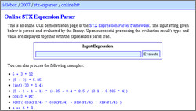
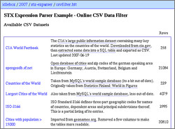
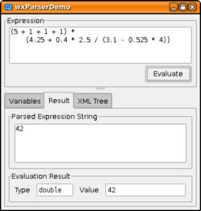

STX Expression Parser C++ Framework v0.7
| TalkBox |
| |
| I call the stx::ParseTree::evaluate() millions of times across my input data sets. Thanks for a great parser that supports more than one data type!! |
Posted on 2009-11-10, last update 2011-01-30 by Timo Bingmann at Permlink.
Summary
The STX Expression Parser provides a C++ framework, which can process user-specified expression strings containing program-specific variables. It can be integrated into applications to allow user-customized data selection and filtering. The expresssion strings are intuitive SQL-like WHERE-clauses and can contain arbitrarily complex arithmetic. At the same time the parse tree evaluation speed is guaranteed to be fast enough to safely iterate over larger data sets. The framework uses the Boost.Spirit parser library combined with a versatile custom scalar value class.
The expression parser can process arbitrarily complex arithmetic expressions like those seen below. To access application-defined data, functions and variables may be included in the expression. An expression can be used as a boolean filter by using comparison and logic operators.
6 + 3 * 12a == 6 * 9(a - 28) * (int)(e + 0.4 * 2.5 / (PI() - EXP(-0.644) * 4))a >= 5 OR (42 <= field2 AND field2 <= 48) || NOT(got == "yes")
The C++ library source archive can be downloaded below. Its API is extensively documented using doxygen. The library also contains a testsuite to assure code quality. The testsuite's gcov reports show 53.1% overall coverage: 38.2% of the AnyScalar classes and 76.2% of the expression parser classes.
Previously, an online interactive CGI demo of the parser was available. Due to changes to the website in 2012, it was taken offline. However, some static examples remain, which demonstrate the inner workings of the library for a given expression string.
Furthermore a number of example CSV data files can be browsed, sorted, analyzed and filtered using the csvtool example. See the csvfilter page for an instructive use of this library. The CSV filter can be applied online to sample datasets like the CIA World Factbook, the ISO 3166 country codes or geonames.org's list of the largest cities of the world.
Last but not least, a wxWidgets graphical demo program is included in the source tarball. Compiled binary versions can be found on the demo download page.
Online / Offline Demos
|  formerly online demo page |  CSV filter demo page |  demo download page |
Downloads
| STX Expression Parser C++ Framework 0.7 (current) released 2007-07-17 | ||
| Source code archive: | Download stx-exparser-0.7.tar.bz2 (452kb) MD5: c813fd6147726b62f2e487c60a5883bf | Browse online |
| Extensive Documentation: | Download stx-exparser-0.7-doxygen.tar.bz2 (187kb) MD5: bf25f8f7a4b03a538e1e11c111f43a1f | Browse documentation online |
| wxParserDemo Binaries: | See Extra Download Page for Win32 and Linux binaries. | |
License
The complete source code is released under the GNU Lesser General Public License (LGPL) v2.1 or later.
Git Repository
The git repository containing all sources and packages is available by runninggit clone https://github.com/bingmann/stx-exparser.git
Related Projects
- The project JEvaluator implements a similar expression parser and evaluator from scratch in Java.
README
Summary
The STX Expression Parser provides a C++ framework, which can process user-specified expression strings containing program-specific variables. It can be integrated into applications to allow user-customized data selection and filtering. The expresssion strings are intuitive SQL-like WHERE-clauses and can contain arbitrarily complex arithmetic. At the same time the expression processing time is guaranteed to be fast enough to safely iterate over larger data sets.
Originally I wrote this parser framework for my study thesis (see http://idlebox.net/blogtags/compsci_study_thesis). In the thesis millions of graph edges are processed and organized in an r-tree search index structure. Each vertex and edge had a number of attributes like "color" or "importance". These attributes could then be used in filter expressions to determine which edges are returned by a graph server and displayed on a remote client. The attributes of the filtered edges could be used to calculate the returned data set using expressions similar to SQL column selection clauses.
Four instructive example applications are included in the package. See Extensive Example Programs Including Source Code for more.
Compilation and Boost.Spirit
The expression parser's grammar is implemented using the Boost.Spirit parser framework (see http://spirit.sourceforge.net). Therefore Boost must be installed to compile the expression parser library. But as Boost.Spirit is a set template includes, the resulting static library has no external dependencies. The second purpose of this library release is to show a reasonably complex Spirit parser grammar. See Spirit Grammar and ParseTree Processing for more details.
Warning:
Compiling the library with gcc 3.3 -O3 can take very long and a huge amount of RAM. This is due to the complex template classes created by Boost.Spirit. Compilation with gcc 4.x is much faster.
Expression Examples
The expression parser allows arbitrarily complex arithmetic expressions like:
6 + 3 * 12(5 + 3) * 5.25(int)(30 * 1.4)(5 + 1 + 1 + 1) * (4.25 + 0.4 * 2.5 / (3.1 - 0.525 * 4))
To process program-defined data functions and variables may be included in the expression:
a * 5 + 3 * b + EXP( LOGN(2) ) + COS( PI() / 2 )
To enable the expressions to be used as filters many comparison operators and boolean logic operators are defined:
6 * 9 == 42a >= 5 OR (42 <= field2 AND field2 <= 48) || NOT(got == "yes")
Extensive Example Programs Including Source Code
The distribution contains two well documented example programs:
and a third more complex (less documented) example program:
Furthermore a user-friendly graphical demonstration application is included:
Short Overview of the Library's Design
Types and the AnyScalar Class
The parser operates on following scalar types:
- boolean
- 8-bit '
char' integer, 16-bit 'short', 32-bit 'integer' and 64-bit 'long' integer - 8-bit '
byte', 16-bit 'word', 32-bit 'dword' and 64-bit 'qword' unsigned integers - single and double precision floating point (
floatanddouble string
These data types are processed by the library using the stx::AnyScalar class. It contains a (type, value) pair of one of the scalar type listed above. These scalar values can then be added, subtracted, multiplied, divided or compared using member functions. If the two composed scalar objects are of unequal type, then the operation is calculated in the "higher" data type (very similar to C) and returned as such. So a small unsigned integer can be added to a larger integer or even a string.
The reason to include the smaller integer types is based on the original purpose of this library. In my study thesis the resulting values were transfered over a network socket from a graph server to its drawing client. For this purpose it was important to convert the resulting values into smaller data types and thus reduce network traffic. For online-filtering applications this is probably not as important.
Spirit Grammar and ParseTree Processing
The expression parser grammar is an extension of the more basic "arithmetic calculator". It is extended to recognize floating point numbers, quoted string constants, attribute placeholders, function calls, comparison and boolean operators.
A user given input string is parsed by Spirit into an abstract syntax tree (AST). The AST is then processed into a tree of stx::ParseNode objects. During the construction of the stx::ParseNode objects all constant subtrees are folded into constant objects. This way repeated evaluation of the ParseTree is accelerated. At the end the top stx::ParseNode is returned in a stx::ParseTree enclosure.
The stx::ParseTree's main method is evaluate(), which takes a stx::SymbolTable and recursively evaluates the contained stx::ParseNode tree using the variable and functions contained in the symbol table. The result is returned as an stx::AnyScalar object.
Further Details
After this abstract design discussion it is probably best to read the first Example Application: Simple Expression Calculator. It contains a comprehensible walk-through of the libraries interface function and classes.